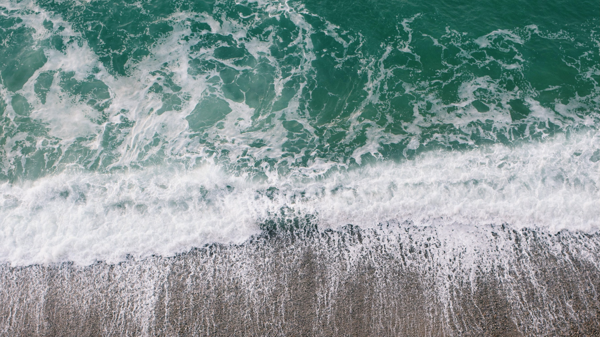

4 R's
Que importantes son las 4 R's y cuanto necesita el planeta que las hagamos! Son acciones simples y ayudan un montón. Te las dejo a continuación:
- Reducí: Reducí el uso de plásticos, para esto podes usar botellas de vidrio, sorbetes/cubiertos de metal, shampoo y acondicionador sólido (que además hacen mejor a tu pelo), bolsas de tela y demás
- Reutilizá: Reutilizá todo lo que puedas, y lo que ya no querés más regalalo o donalo
- Repensá: Reinventá, si algo ya no te sirve para su función original, buscale otra!
- Y por último... Reciclá: Hacelo como última opción, cuando sea inevitable descartar algo, hacelo separando tus residuos